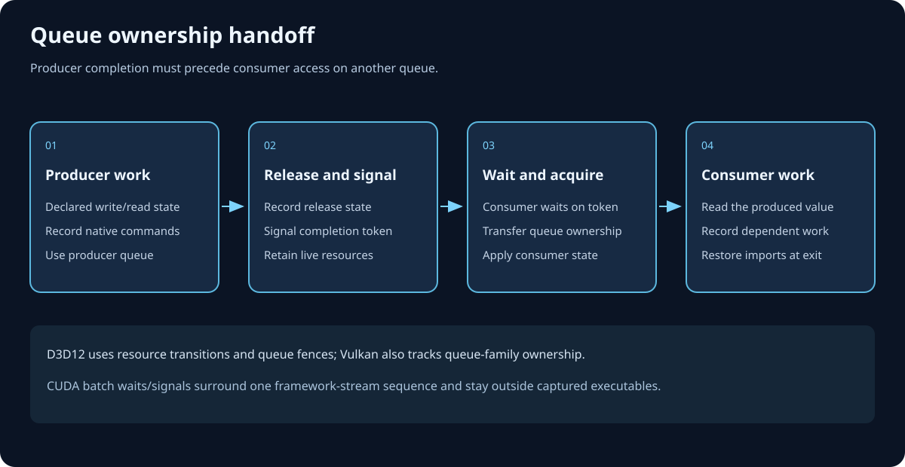

Materialize, record, submit
Execution and submission
ArdaRenderGraph execution turns a compiled logical schedule into physical resources and one command list per live pass with work. Recording may finish out of order; submission never does.
Learning objectives
After this chapter, you should be able to:
- restate every execution stage from E0 through E10 in its actual order;
- distinguish logical creation, external import, physical materialization, and extraction;
- explain why the ideal transient heap layout is computed but not consumed;
- predict committed-resource reuse, runtime state correction, recording waves, and queue waits;
- interpret
FARDGExecutionResultwithout treating submission as completion; and - apply the model to the ARDGExample terrain graph.
Prerequisites
Read Architecture and lifecycle, Resources, Passes, and Compilation. You should understand logical handles, pass registration order, compiled execution order, inclusive lifetimes, pipelines, transitions, and queue dependencies.
The execution contract
FARDGBuilder::Execute is one-shot. It compiles if necessary, then materializes, records, and submits. A second call, execution after a sticky failure, or execution without a device is a fatal programming-contract violation.
A failure guard becomes active once execution starts. It is disarmed only after all submissions and extraction publication succeed. An exception or interrupted stage makes the builder permanently failed so partially submitted work cannot masquerade as a reusable graph.
Exact E0–E10 execution flow
The following labels name the implementation’s fixed ordering. They are a reading aid, not independently callable API phases.
- E0 — Guard and compile. Reject repeated, failed, or device-less execution; call
Compile; mark execution started; arm the sticky-failure guard. - E1 — Reset the report. Zero the builder-owned execution result and copy the selected immediate-mode bit into telemetry.
- E2 — Materialize resources. Evaluate transient heap requirements, retain imported handles, bind created textures and buffers from execution-local committed pools, create acceleration structures, and allocate dedicated uniform buffers.
- E3 — Correct physical transitions. Replay compiled transitions by physical identity so committed-resource reuse inherits the state actually left by the previous logical occupant; also plan supported first-write clobbers.
- E4 — Build recording levels. For each live pass, compute
level = max(producer level + 1)across both data producers and synchronization producers. - E5 — Record pass command lists. Process levels in ascending order. Eligible passes record concurrently in thread-capped batches; immediate-mode and
NeverParallelwork records serially. Each pass owns a distinct list. - E6 — Upload uniforms. If uniform buffers exist, write all frozen bytes on one graphics command list, transition them to constant-buffer state, and submit that upload list.
- E7 — Submit passes deterministically. Walk compiled registration-based execution order, insert the first uniform-upload wait per non-graphics queue and each compiled cross-queue dependency wait, then submit each recorded list and retain its queue instance.
- E8 — Publish extractions. After all CPU submissions, assign requested physical texture and buffer references to caller-owned output locations.
- E9 — Run device garbage collection. Invoke the RHI collection boundary once; this schedules or performs backend-safe retirement but is not a GPU wait.
- E10 — Commit success and telemetry. Mark the graph executed, disarm the guard, emit submitted-list, queue-wait, and clobber trace counters, then return the report.

Materialization, imports, extraction, and reuse
A logical resource describes intent; execution needs a physical RHI object. The three paths differ:
- Graph-created texture or buffer
CreateTextureandCreateBufferdefer physical allocation until E2. The normalized initial state replacesUnknownwithCommon.- Imported external resource
RegisterExternalTextureandRegisterExternalBufferretain an existing physical handle and declared entry state. Materialization validates that the handle still exists; it does not allocate replacement storage.- Extracted graph-created resource
QueueTextureExtractionorQueueBufferExtractionkeeps the resource live through the epilogue, requests a final state, and publishes its physical reference only at E8.

The ideal transient heap layout is currently unused
If the device advertises virtual resources, E2 creates virtual probes, queries memory size and alignment, and packs non-overlapping transient lifetimes into an ideal layout. The current executor then discards that layout. The RHI does not yet provide portable heap-compatibility queries and aliasing barriers, so placed-resource aliasing would be unsafe on at least one supported backend.
Consequently, mbUsedVirtualHeaps and mbUsedTransientAliasing remain false on this path, while mbUsedTransientFallback reports committed fallback for transient candidates.
Committed descriptor-pool reuse
The execution-local texture and buffer pools can reuse a committed object when all of these conditions hold:
- normalized descriptors match exactly; a hash only selects a bucket and is never sufficient;
- the earlier inclusive lifetime ends strictly before the later lifetime begins;
- every use of the logical resource stays in the same non-negative queue domain; and
- the prior pool entry is available at the new first-use index.
A resource used by more than one queue receives no reuse domain and cannot take this shortcut. The pool lasts for one execution, so this is intra-graph committed-object recycling, not a persistent frame-to-frame cache. Exact matches increment mTexturePoolReuseCount or mBufferPoolReuseCount.
Physical-state correction after reuse
Compilation knows logical identities. Pooling can later bind logical A and logical B to the same physical object. B must therefore begin in A’s final physical state, not in B’s descriptor initial state.
E3 independently walks execution order and keys state by physical identity. Texture history is tracked per mip and array slice; buffer history is whole-resource. Runtime transitions replace compiled before-states, recompute equal-state UAV ordering, and preserve forced-barrier intent. During E5, the graph disables automatic barriers, seeds the corrected physical state, requests transitions, commits barriers, and only then invokes the pass callback.
First-write clobbering
When mbClobberFirstWrites is enabled, E3 tracks production separately from transition state. External resources begin produced; graph-created resources become produced at their first declared write. Texture production is per subresource, while buffer production is whole-resource.
Immediately before a supported first write, E5 writes a conspicuous pattern:
- floating-point color textures: magenta
(1, 0, 1, 1); - integer textures and UAV buffers:
0xCDCDCDCD; - depth/stencil textures on graphics: depth
0.12345and stencil0xCD.
Copy passes are not clobbered. Buffer clobbering requires a whole-buffer UAV write to UAV-capable storage. This mode detects code that accidentally preserves old contents across a declared overwrite; it is a diagnostic oracle, not initialization policy.
Dependency-level parallel recording waves
FARDGExecuteOptions controls CPU recording. mbParallelRecording defaults true. mMaxRecordingThreads uses hardware concurrency when zero and otherwise clamps to at least one worker.
Each pass level includes both data and explicit synchronization producers. Within one level, eligible passes are split into batches no larger than the thread cap and launched asynchronously. Every batch joins before the next batch, and every level completes before the next level. EARDGPassFlags::NeverParallel, disabled parallel recording, and immediate mode place a pass on the serial list.
Each recorded pass owns a separate command list selected from its compiled graphics, compute, or copy pipeline. Recording workers write separate result slots and otherwise treat graph data as read-only. A pass callback should use FARDGPassExecutionContext so physical access remains declaration-checked.
Uniform-buffer materialization and upload
CreateUniformBuffer freezes parameter bytes during graph construction. E2 creates dedicated physical buffers; unlike textures and ordinary buffers, these allocations do not use the committed reuse pools.
At E6, one graphics command list writes every frozen byte range, transitions each buffer to ConstantBuffer, closes, and submits. The returned graphics instance is zero when there are no uniform buffers or when submission fails. Graphics pass submissions inherit same-queue order. Before the first pass on each non-graphics queue, E7 inserts exactly one wait on the nonzero upload instance.
Deterministic submission and queue waits
E7 ignores worker completion order and walks mExecutionOrder, which compilation preserves deterministically from registration order after culling and sentinel insertion. Each pass list is submitted separately. Its returned instance is stored by pass and as the last instance for that queue.
For every FARDGQueueDependency whose consumer is the current pass, execution looks up the producer pass instance and calls the RHI queue wait from the consumer pipeline to the producer pipeline. Same-queue dependencies need no explicit queue dependency: deterministic queue submission order supplies execution order.
Portable resource handoff between queues
A wait orders queue execution, but it does not by itself make every native resource state legal on the destination queue. When physical transition replay detects that the next use moves to another queue, the producer transitions the affected texture subresource or whole buffer to Common, emits a queue release, and records a QueueRelease state-conformance checkpoint. After the GPU wait, the consumer emits the matching acquire, records QueueAcquire, and transitions from Common to its declared state.

D3D12 uses the Common boundary so a copy list never receives an illegal UAV-to-copy transition. Vulkan combines the same state boundary with paired queue-family release/acquire barriers when the selected families differ. If both logical queues share one Vulkan family, the ownership operation reduces to synchronization while normal state/layout transitions remain intact.
Queue waits are placed before the consuming list. A missing or zero producer instance is skipped; successful paths should therefore correlate the result count and backend statuses if submission loss is suspected. The current telemetry counts requested waits and submitted list attempts, not confirmed GPU completions.
Extraction after submit, garbage collection, and completion
Extraction publication happens only after the submission loop. The output pointer supplied during graph construction must still be valid. Publication transfers a durable RHI reference and the compiler has already arranged the requested final state, but the referenced GPU contents may still be in flight.
E9 calls device garbage collection once at the graph-submission boundary. Collection cooperates with backend retention; it does not replace external synchronization. Before CPU readback, manual memory reuse, or destruction outside retained ownership, wait for the appropriate queue instances through the RHI completion contract.
On D3D12, ending the recorded-pass scope does not destroy in-flight native work. Submission captures the command allocator/list, transient upload or readback resources, command signatures, descriptor owners, and referenced native resources beside the exact graphics, compute, or copy fence value. Garbage collection retires that capture only when the same queue completes it. The 120-frame D3D12 ARDG regression exists specifically to detect premature retirement that may otherwise surface later as device removal during present or command-list allocation.
Execution result telemetry
The returned report is builder-owned and describes one completed CPU submission phase:
mSubmittedCommandListCount- Pass and boundary command lists submitted; the separate uniform-upload list is not included.
mQueueWaitCount- Explicit cross-queue waits, including first-use uniform-upload waits.
mTexturePoolReuseCount/mBufferPoolReuseCount- Logical resources served by exact committed descriptor reuse.
mbUsedParallelRecording- At least one recording batch contained multiple jobs.
mbUsedVirtualHeaps/mbUsedTransientAliasing/mbUsedTransientFallback- Allocation-path facts. The current executor reports committed fallback rather than consuming the computed ideal heap layout.
mbUsedImmediateMode- The graph used the immediate-mode correctness oracle.
mClobberedResourceCount- Supported resources actually cleared before first writes.
mLastSubmittedInstances[3]- Last graphics, compute, and copy queue instances. Preserve queue identity; values from different queues are not globally comparable.
E10 also emits trace counters named ARDG Submitted Command Lists, ARDG Queue Waits, and ARDG Clobbered Resources. Use these with the ARDG Execute scoped CPU timer, not as substitutes for GPU timing.
ARDGExample terrain walkthrough

- Update settings writes frame terrain settings.
- Upload settings requests copy work. It falls back to graphics if copy capability is unavailable.
- Generate noise writes the heightmap on requested async compute; a cross-queue wait connects it to settings upload when queues differ.
- DebugHeightmap reads the intermediate heightmap but has no externally visible output. Its ordering into later overwrite work is synchronization-only, so culling removes it.
- Erode heightmap consumes and updates terrain data, followed by Triangulate, which creates terrain vertex/index data.
- Render terrain consumes camera, terrain buffers, and the imported back buffer on graphics.
- Terrain overlay is the last back-buffer writer and remains rooted through the graph epilogue.
At execution, imported camera/back-buffer resources retain their RHI handles. Created transient terrain resources materialize from committed pools. Independent recording may overlap on CPU, but submit order remains the compiled order. Queue waits are generated only where producer and consumer pipelines differ. The terrain vertex and index readbacks specifically exercise the async-compute UAV to dedicated-copy handoff; both queues observe Common at the ownership boundary before the copy queue enters CopySource.
Worked example: execute, inspect, then retire
FARDGExecuteOptions options;
options.mbParallelRecording = true;
options.mMaxRecordingThreads = 4;
const FARDGExecutionResult& submitted = graph.Execute(options);
LogFrameSubmission(
submitted.mSubmittedCommandListCount,
submitted.mQueueWaitCount,
submitted.mLastSubmittedInstances);
// The extracted handle is now published, but GPU writes may still be in flight.
// Associate queue instances with the frame's completion primitive before reuse.
frameRetirement.Track(submitted.mLastSubmittedInstances, extractedHeightmap);Reasoning: the report supports CPU scheduling and observability. The frame-retirement system—not Execute—establishes when the extracted heightmap can be read, recycled, or released.
Failure analysis: symptom, cause, prevention, recovery
- Fatal check: graph executes twice
- Cause: a one-shot builder was reused. Prevention: construct one builder per graph instance. Recovery: discard it and rebuild; do not retry the same builder.
- Stale or corrupt data after committed reuse
- Cause: suspect an undeclared access, wrong range, or raw-command-list escape before blaming descriptor reuse; E3 corrects declared physical states. Prevention: declare every access and use the validated context. Recovery: enable extended lifetimes and clobbering, capture the first divergent pass, then repair its declaration.
- Parallel mode crashes or changes output
- Cause: a callback mutates shared CPU state despite distinct command lists. Prevention: make callback inputs immutable or mark the pass
NeverParallel. Recovery: serialize to isolate, fix ownership, then re-enable parallel recording. - Compute/copy sees stale uniform data
- Cause: submission failure or work outside graph-managed ordering. Prevention: keep uniform consumers in declared passes and preserve device status diagnostics. Recovery: inspect the upload instance and first wait on each non-graphics queue.
- Extracted output exists but CPU read is wrong
- Cause: extraction publication was mistaken for GPU completion. Prevention: associate returned queue instances with frame retirement. Recovery: wait for the producing queue and fix the ownership boundary.
- Memory savings are lower than ideal-layout estimates
- Cause: ideal placed-resource layout is intentionally unused; committed fallback and same-queue descriptor reuse are the implemented paths. Prevention: budget from telemetry, not the ideal packer. Recovery: reduce live intervals or compatible resource pressure; do not assume physical aliasing.
- Too many queue waits or command lists
- Cause: queue ping-pong, many cross-queue consumers, or one-list-per-pass granularity. Prevention: request async/copy queues only for measured benefit. Recovery: inspect compiled dependencies and consolidate pipeline choices.
Summary
Execution is a one-shot CPU pipeline: validate and compile, materialize committed resources, correct transitions by physical identity, record dependency waves, upload uniforms, submit in deterministic order with queue waits, publish extraction references, run garbage collection, and return telemetry. The current executor computes but does not consume an ideal transient heap layout. Successful return means submitted, never GPU-complete.
Checkpoints
- Why must physical-state correction occur after committed pool binding?
- Which four conditions permit committed texture or buffer reuse?
- Why can two passes record concurrently but still submit in registration order?
- When does a non-graphics queue wait on uniform upload?
- What does extraction publication prove, and what does it not prove?
- Why are ideal transient heap offsets currently diagnostic rather than executable?
- Which telemetry fields help distinguish recording parallelism, resource reuse, and queue synchronization?
Further reading
- Compilation and scheduling — culling, lifetimes, transitions, pipelines, and queue dependencies.
- Validation and debugging — differential oracles, graph dumps, and production diagnosis.
- ArdaBackend commands and submission — RHI lists, waits, fences, and completion.
- API:
FARDGBuilder::Execute,FARDGExecuteOptions, andFARDGExecutionResult. - Glossary: render graph, pass, lifetime, and descriptor.